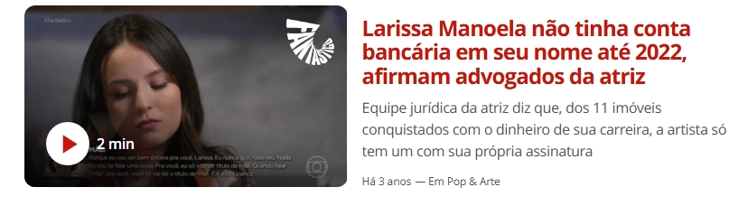
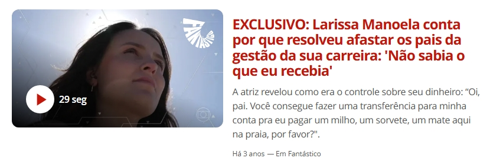
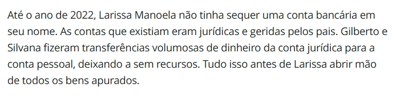
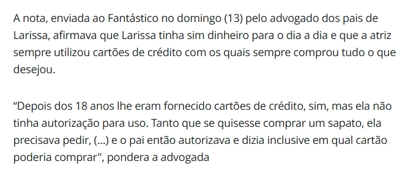
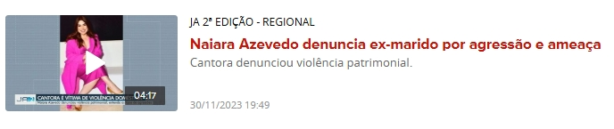
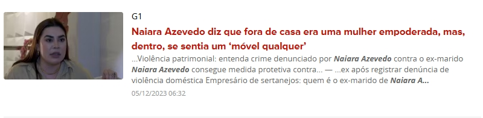
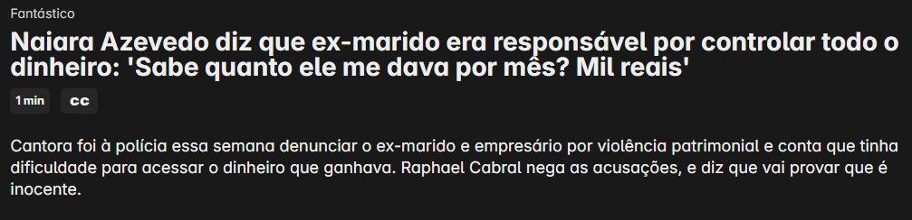
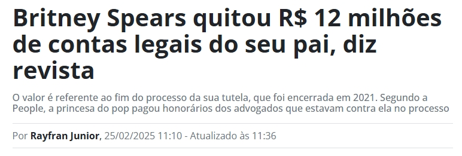
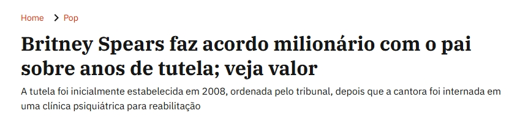
Uma calculadora de verdade ao abrir.
Configuração do PIN
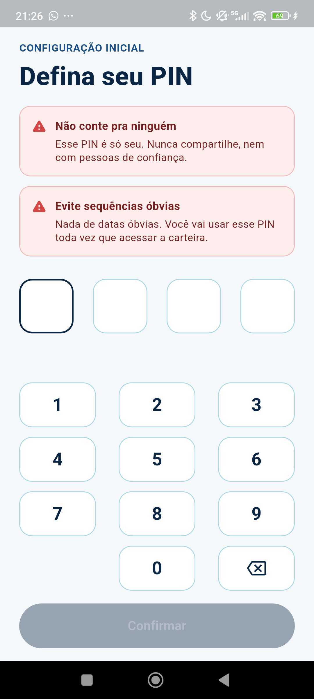
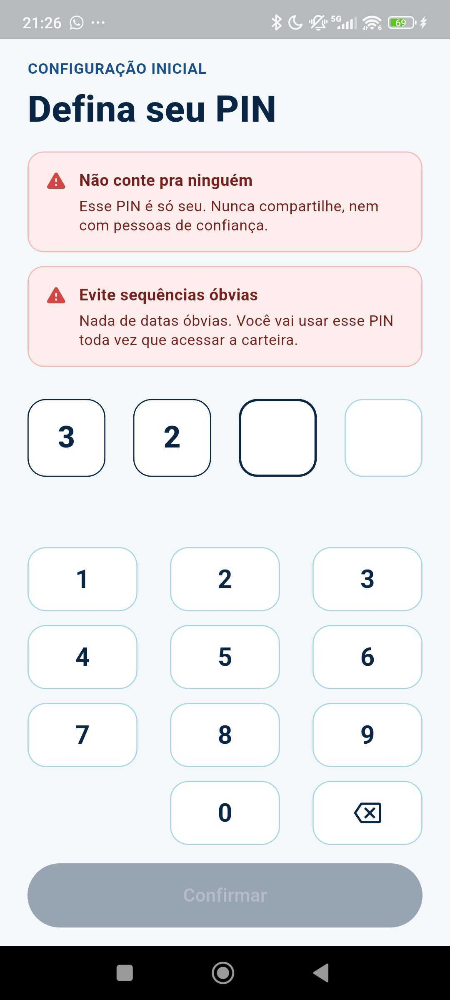
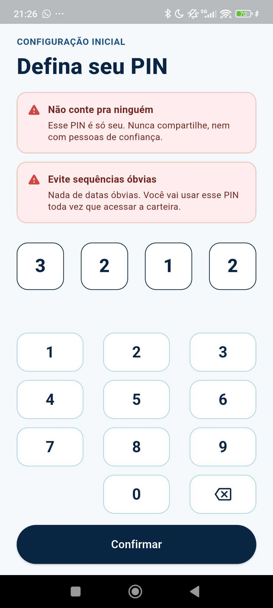
Não é sobre criptografia mais forte.
É sobre nunca levantar suspeita.
O Satra protege contra quem vasculha o celular — não contra um hacker. Uma reserva financeira que existe sem nunca parecer existir.